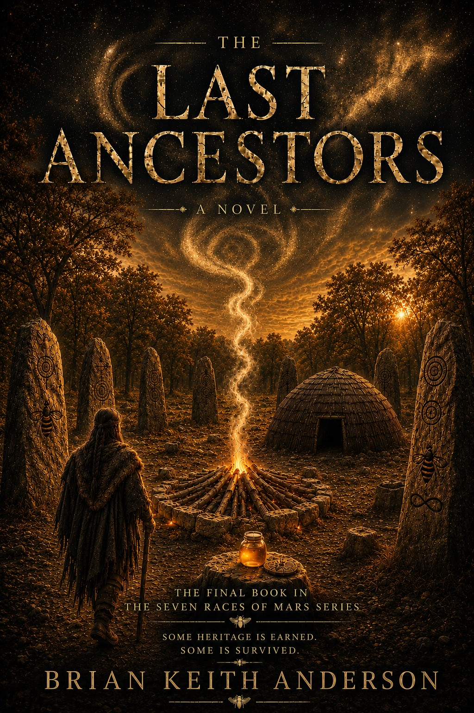

About This Book
In The Last Ancestor, Asa’s long journey reaches its final awakening. The bogs have remembered, the cities have opened, the children have called, and the races have begun to return. Yet one final truth remains — the truth of the last ancestor and the purpose behind everything Asa has witnessed.
This final book brings together the bees, the honey jar, the Seven Races, Saxifraga, and the living memory of Mars into one closing revelation.